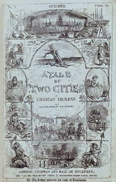

Book The First: Recalled To Life
Book One opens in 1775 and focuses on the symbolic resurrection of Dr. Alexandre Manette, who has finally been released after an eighteen-year imprisonment in the Bastille. Lucie Manette (his dutiful seventeen-year-old daughter) and Jarvis Lorry (a business-minded bank clerk) retrieve him from a garret at the top of a wine shop in Paris. Dr. Manette cannot remember who he is, but he begins to recall his past life after seeing Lucie for the first time.
Book The Second: The Golden Thread
Book Two takes place five years after the events of Book One. It focuses on Charles Darnay, a French emigrant who denounces his aristocratic heritage for a new life in England. Darnay, whose real surname is Evrémonde, is on trial for treason - but is spared by the intervention of Sydney Carton, a young, alcoholic attorney who happens to be nearly identical to Darnay. Dr. Manette, who made a full recovery from his trauma-induced memory loss, builds a successful medical practice in his home near Soho. Darnay, unaware that his father and uncle were responsible for Dr. Manette’s long imprisonment, falls in love with Lucie Manette, and the two marry. The novel’s preoccupation with revolutionary sentiment deepens as the French peasantry buckles under increasing oppression from the aristocracy. The French Revolution begins, and Darnay decides to rescue his uncle’s longtime servant, Monsieur Gabette, from Paris.
Book The Third: The Track Of A Storm
Book Three highlights the brutality of the French Revolution, particularly during the Reign of Terror in Paris between 1793 and 1794. Darnay, who cannot hide his aristocratic heritage, is imprisoned for the crimes of the Evrémondes. He is initially released (with the help of Dr. Manette, who rushed to Paris with Lucie after they learned about Darnay’s imprisonment) but is rearrested and sentenced to death. Ultimately, Sydney Carton, the irredeemable drunk, selflessly switches places with Darnay - sacrificing himself so Lucie, whom he loves, can return to London with her husband and daughter.
1911 - A Tale of Two Cities, a silent film, directed by William J. Humphrey.
1917 - A Tale of Two Cities, a second silent film, directed by Frank Lloyd.
1922 - A Tale of Two Cities, a third silent film, directed by Walter Courtney Rowden.
1926 - The Only Way, a fourth silent British film, directed by Herbert Wilcox and starring Martin Harvey.
1935 - A Tale of Two Cities, a black-and-white MGM film, directed by Jack Conway and produced by David O. Selznick, starring Ronald Colman, Elizabeth Allan, Reginald Owen, Basil Rathbone and Edna May Oliver. It was nominated for the Academy Award for Best Picture.
1938 - A Tale of Two Cities, The Mercury Theatre on the Air production of a radio adaptation starring Orson Welles (broadcast 25 July 1938). Welles also starred in a version broadcast on Lux Radio Theater on 26 March 1945.
1945 - A Tale of Two Cities, a portion of the novel was adapted for radio on the syndicated programme The Weird Circle as "Dr. Manette's Manuscript."
1950 - A Tale of Two Cities, the BBC broadcast a radio adaptation by Terence Rattigan and John Gielgud of their unproduced 1935 stage play.
1953 - A Tale of Two Cities, an ABC-produced two-part mini-series for TV as part of their Plymouth Playhouse series, starring Wendell Corey, Murray Matheson and Wanda Hendrix.
1953 - A Tale of Two Cities, Arthur Benjamin's operatic version of the novel, was premiered by the BBC on 17 April 1953, conducted by the composer; it received its stage premiere at Sadler's Wells on 22 July 1957, under the baton of Leon Lovett with singers Alexander Young (Charles Darnay), Heather Harper (Lucie Manette) and John Cameron (Sydney Carton).
1954 - Sydney Carton, a half-hour version for radio broadcast on 27 March 1954, on Theatre Royal hosted by and starring Laurence Olivier.
1957 - A Tale of Two Cities, the first BBC production for TV, an eight-part mini-series in 1957 starring Peter Wyngarde as Sydney Carton, Edward de Souza as Charles Darnay and Wendy Hutchinson as Lucie Manette.
1958 - A Tale of Two Cities, a sixth film version, directed by Ralph Thomas, starring Dirk Bogarde, Dorothy Tutin, Christopher Lee, Leo McKern and Donald Pleasence.
1965 - A Tale of Two Cities, the second BBC production for TV, a ten-part mini-series in 1965, directed by Joan Craft.
1968 - Two Cities, the Spectacular New Musical, stage version with music by Jeff Wayne, lyrics by Jerry Wayne and starring Edward Woodward.
1980 - A Tale of Two Cities, the third BBC production for TV, another eight-part mini-series starring Paul Shelley as Carton/Darnay, Sally Osborne as Lucie Manette and Nigel Stock as Jarvis Lorry.
1980 - A Tale of Two Cities, an American made for TV version, directed by Jim Goddard and starring Chris Sarandon, Peter Cushing, Alice Krige and Billie Whitelaw.
1984 - A Tale of Two Cities, animated film version by Burbank Studios.
1989 - A Tale of Two Cities, an ITV Granada production for TV of a two-part mini-series starring James Wilby as Sydney Carton, Xavier Deluc as Charles Darnay and Serena Gordon as Lucie Manette. The production also aired on Masterpiece Theatre on the PBS in the United States.
1989 - A Tale of Two Cities, a BBC Radio 4 production of a seven-hour drama adapted for radio by Nick McCarty and directed by Ian Cotterell. This adaptation has been occasionally repeated by BBC Radio 7 (most recently in 2009).
1997 - A Tale of Two Cities, Paul Nicholas-commissioned stage adaptation with music by David Pomeranz and book by Steven David Horwich and David Soames. Co-produced by Bill Kenwright, the show ran at the New Alexandra Theatre in Birmingham during their 1998 Christmas season with Paul Nicholas as Sydney Carton.
2006 - Two Cities, stage musical by Howard Goodall which relocated the action to the Russian Revolution of 1917. It played for a limited season in Salisbury, Wiltshire in September 2006.
2007 - A Tale of Two Cities, stage musical directed by Jill Santoniello, James Barbour, Brandi Burkhardt and Natalie Toro. Opening in Sarasota, it transferred to Broadway and then has appeared at Brighton and on tour in Japan.
2011 - A Tale of Two Cities, as part of its special season on Charles Dickens' Bicentenerary, BBC Radio 4 produced a new five-part adaptation for radio by Mike Walker with original music by Lennert Busch and directed by Jessica Dromgoole and Jeremy Mortimer which won the 2012 Bronze Sony Radio Academy Award for Best Drama.